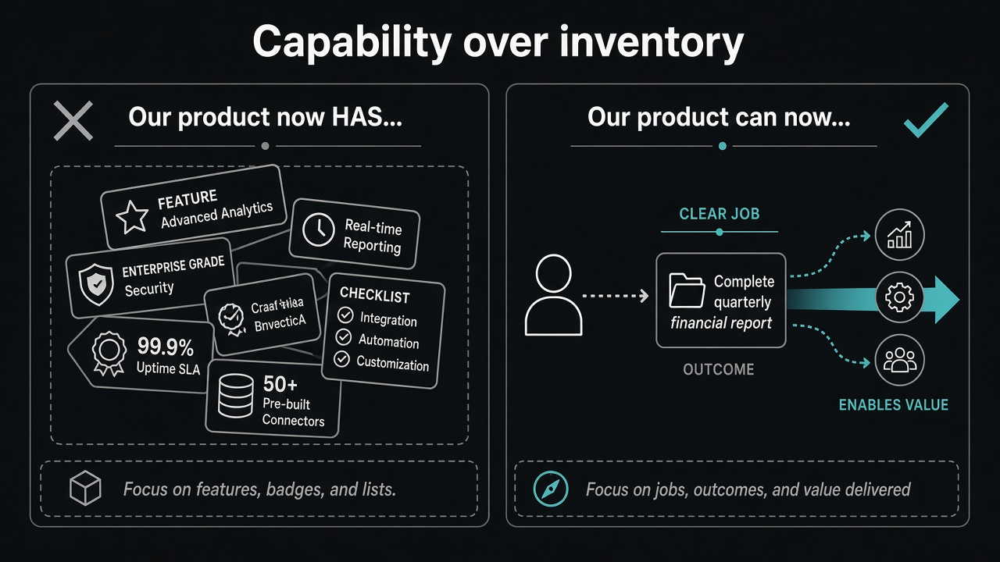

Optimize for “Our product can now…”
Source: Lenny Rachitsky (@lennysan) quoting Roman Ugarte’s Grok Bot framing
original post
What it claims
Stop working backwards from “Our product now has…” (feature inventory, badges, checklists). Optimize for “Our product can now…” — the new job or capability the user can complete. Inventory answers “what did we ship?” Capability answers “what can someone do that they could not do before?”
Why it matters for a PO
Roadmaps and PI decks drift into feature lists because lists are easy to defend. A Product Goal is clearer when written as a capability sentence. Stakeholders argue less about ticket wording when the Increment is framed as a new “can now,” not another “has.”
3 takeaways
- Rewrite every epic title as “users can now ___” before you protect the feature list.
- “Has” is sunk-cost language; “can now” is outcome language.
- If you cannot finish the “can now” sentence, you do not have a Product Goal yet — only inventory.
Practice this week
Take your top three in-flight items. Rewrite each as one “Our product can now…” sentence. Drop or reframe any item that only works as “Our product now has…”. Bring the three sentences to the next planning conversation.